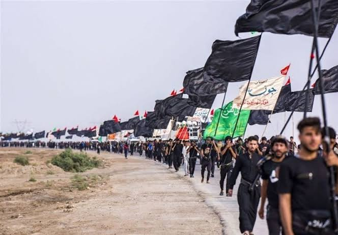

Theology & devotion
Why Karbala stays close
For Shia Muslims, Ashura is not filed away as history. It is retold, wept over, and walked toward every year a living argument about what faith asks of a person facing injustice.

In Shia belief, Hussain is the third Imam a divinely appointed successor to the Prophet's spiritual and moral authority, not merely a political claimant. His refusal to legitimise Yazid's rule is understood as a refusal to let the Prophet's message be hollowed out from within. That is why Karbala reads, in Shia tradition, less as a defeat than as a line that was not allowed to be crossed.
Two ideas sit underneath almost everything that follows on this page: that silence in the face of a corrupt authority is itself a form of consent, and that a stand can succeed morally while failing militarily. Hussain lost the battle and, tradition holds, won the argument the Umayyad dynasty's legitimacy never fully recovered from what was done at Karbala.
Muharram
How the mourning is kept
Practice varies widely by country and community what follows describes common threads, not a single fixed ritual.
Majlis
Gatherings, often nightly through the first ten days of Muharram, where a speaker retells part of the Karbala narrative and draws out its ethical lessons. The majlis is as much moral instruction as remembrance.
Elegy & lament
Reciters lead mourners in elegiac poetry set to melody, building through the gathering toward the retelling of Ashura itself. The words are usually specific to a community's own language and tradition, and are treated with real care rather than casual repetition.
Matam
A rhythmic, controlled striking of the chest performed communally during laments, expressing grief in the body rather than only in words. Its form and intensity differ considerably between communities, and some observe Muharram without it at all.
Alams and the Panja
Processional standards often topped with a stylised open hand, the Panja are carried through Muharram processions. The five fingers are widely read as representing the Panjatan Pak, the "Five Pure Souls": the Prophet Muhammad, Ali, Fatima, Hasan, and Hussain.
Ta'zieh
In parts of Iran and elsewhere, the events of Karbala are staged as a passion play sung, costumed, performed in public squares so that the story is not only heard but watched unfold.
The 40th day
Arbaeen
Forty days after Ashura, Shia Muslims mark Arbaeen traditionally the day Hussain's family, released from captivity, is said to have returned to Karbala to grieve at the graves. Today it is observed by one of the largest annual gatherings of people anywhere in the world: millions walk, many on foot for days, along the road from Najaf to Karbala in Iraq, joined along the way by volunteer stations offering free food, water, and rest to every pilgrim regardless of faith.
Visiting the shrine
Ziyarat
Ziyarat — the act of visiting and greeting the Imams at their shrines is a core devotional practice, and Hussain's shrine at Karbala is among its most visited sites. Pilgrims recite specific salutations addressed to Hussain and his companions, understood not as worship of the person but as an act of loyalty and grief carried out in his physical presence.
In short
What the story is asked to carry
Justice over survival
Hussain is presented as choosing principle over the far safer option of submission a template Shia ethical teaching returns to whenever a believer weighs comfort against conscience.
Grief as active, not passive
Mourning Hussain is framed as participation, not spectatorship a yearly renewal of the same refusal he made, rather than sentimental memory alone.
Not every Shia community observes these practices the same way, and reasonable disagreement exists within Shia scholarship about emphasis and form this page describes common ground, not a single authority's ruling. For a felt sense of what a candle, a hand, and a moment of stillness can carry, the tribute page is next.